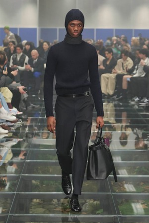
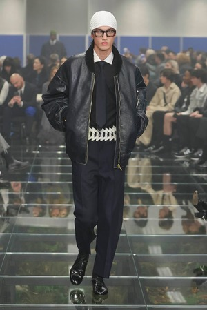

Hello, my name is Jared Benman and I am a second year at Illinois Tech! I am currently an ITM major and I plan to use my degree to become a UI/UX designer in the future.
I'm from Michigan, and I was born in Detroit.
Hobbies
One hobby I really enjoy is video/picture editing on Adobe After Effects. I basically make edits of whatever I am interested in and share them on the internet. Below is an edit I recently made for my friend's birthday!
Another hobby I enjoy is fashion. I love browsing clothes and creating outfits with pieces I see. I also really enjoy watching fashion shows and observing creative pieces from fashion designers. Here are some looks from the Prada menswear show.
 Some of my other hobbies include gaming, playing the guitar, reading, playing golf, and more!